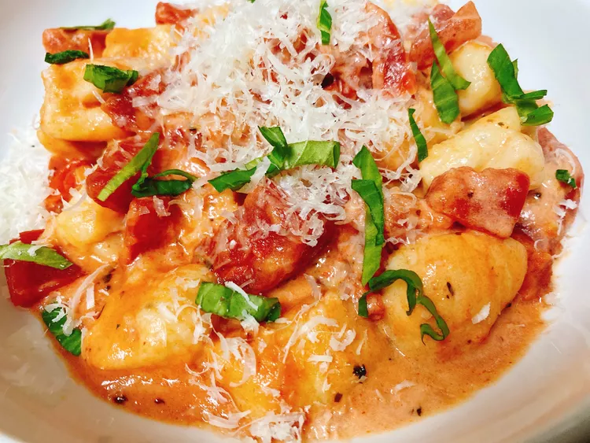

Tomato Basil Gnocchi

Description
These quick and easy tomato basil gnocchi are amazing as a speedy bite without much fuss.
Ingredients
- 2 cups potato gnocchi
- 1 tablespoon butter
- 2 cloves garlic, minced
- 1 pinch italian seasoning
- 3/4 cup prepared spaghetti sauce
- 1/4 cup freshly shredded Parmesan cheese, or to taste
- 6 fresh basil leaves, cut into very thin strips, or to taste
Steps
- Bring a large pot of lightly salted water to a boil over medium high heat. Drop in gnocchi, and cook until gnocchi float to the top, 3 to 5 minutes. Drain and set aside.
- Melt butter in a skillet over medium heat, and sauté garlic until fragrant, about 30 seconds. Stir in Italian seasoning and gnocchi. Pour in spaghetti sauce and cook until sauce is warmed through, about 5 minutes.
- Add gnocchi to two bowls. Garnish with freshly shredded Parmesan and basil strips.